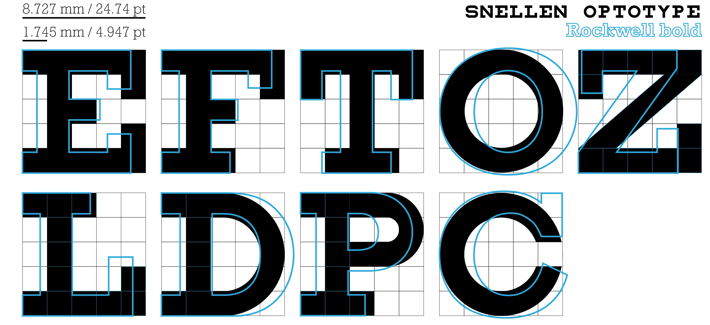

Provincial Instructor’s Diploma Program
PROFILE
Profile +
YURI J. TRICYS -
Web Development Instructor

LinkedIn: yuri-tricys-aa004b26
Github: https://buildhello.ca
Github: https://readingworldmagazine.com
Curriculum Vitae: https://xyz-abc-show-and-tell.github.io/uploads/resume_yuri_tricys_2025_teaching_front_end.pdf
Email: tricys@alumni.ubc.ca
Phone: 1-604-441-9933
Academic Writing +
Hugo Website +
Email Newsletter +
"So you know everything about HTML newsletters? Seems like there is a lot to know..." "Thanks for the feedback, I am working on the presentations..."
Wordpress Website +
Research +
Emacs +
Content [PIDP 3100]
Web Development Instruction [PIDP 3100] +
Trends in Web Development [PIDP 3100] - Exercise 4, Part 1 +
Trends In Web Development - AI
Click the image below to read the recent blog post on trends in web development.
[Source: https://buildhello.ca/space_ex_light/2025-01-25-trends-in-web-development/]
Trends in Adult Education [PIDP 3100] - Exercise 4, Part 2 +
Trends In Adult Education - AI
The integration of generative artificial intelligence (AI) in education is a significant trend that is reshaping how we learn and teach.
Click the image below to read an article about AI trends in adult education, written by Serhii Uspenskyi.

[Source: https://springsapps.com/knowledge/main-ai-trends-in-education-2024]
Here are some of the key trends mentioned in the post:
- Using Generative AI to Make Educational Content
- Teaching With Virtual Avatars
- New Opportunities For Arts Students
- Personalized Learning Experience
- Inclusive Education
- Student Support
- Intelligent Tutoring
- AI Agents Integration
Comments
All of these trends could impact web development instruction, depending on the requirements of the institution.
Web development itself, as a branch of software development, is likely to rely largely on generative AI going into the future, especially with respect to AI agent integration.
That means to instruct web developers effectively, a web development instructor must understand and be able to use generative AI in both teaching and developing websites.
To repeat: one way or another an instructor has to learn to integrate a generative AI agent into a web development pipeline, so that he/she can teach it.
While using generative AI to make educational content is optional, it's definitely an intelligent consideration.
Personally, I already use generative AI. For example, I used generative AI to find the article I posted above and summarize aspects of AI in education.
[Though I didn't use the summaries AI generated, since the article above had in my opinion better summaries.]
Also, I'm currently attempting to take multiple courses in generative AI and machine learning while taking the Provincial Instructor's Diploma.
The downside of AI in education is that learning it is yet another workload on instructors, on top of the work it took them to master web development to the extent they can teach it in the first place.
The upside of AI in education is that it should be boost productivity, making it possible for instructors and students to do more and learn more in similar time frames.
Cognitive Learning [PIDP 3100] - Exercise 3 +
The Effects of Disfluency On Education
Click the image below to read our post on the effects of disfluency on educational outcomes.
[Source: https://buildhello.ca/ex_light/2021-11-01-selecting-a-font-for-your-project/]
Learning Partner Call [PIDP 3100] - Exercise 4 Part 3 +
A Discussion on Education, AI, and Digital Media
I caught up with my learning partner early in the afternoon on a cold Wednesday in February of 2025.
Outside, there was a lot of snow on the ground, and ice. Vancouver gets cold, some winters. This apparently was one of them.
I did everything I could to get the lighting right on the camera.
Not bad, actually, but it is time for me to upgrade the tech stack I'm using for Zoom calls.
I clicked on the Zoom link. A few minutes later Filipe started the meeting.
No camera.
After some introductory conversation, Filipe let me know what he does.
He's an instructor of business studies, who teaches business strategy as well as entrepreunership.
I let him know I'm a web development specialists pursuing, along with the instructor certification, which was the reason him and I were speaking, various projects in the digital media space, like Reading World Magazine, for example.
We began to speak along some preplanned meeting points. We were to discuss trends in adult education, as well as our own personal areas of expertise.
Our conversation went on longer than I expected. There is a lot going on in the field of education, in business, and in web development.
I got a sense immediately of Filipe's passion for his subject matter, and of what appears to be a key trend in education today, which sounds like an institutional level movement to ensure offerings from the education sector are unique in value from freely available, and often high-quality, digital media.
His schools are working hard to stay relevant in the era of global, free, quality education.
I thought about the numbers. Are college enrollments falling? Is the education sector in a dip?
Oh, how I'd love to see the numbers.
He started talking about solutions and brought me back to attention quickly.
Filipe mentioned several strategies his schools are implementing to address the modern relevance of a college education.
Strategies School's Are Implementing to Stay Relevant.
- Fewer lectures [40 minutes]
- Case scenarios
- Group Discussions
- Ensuring student's are putting into practice what they're learning.
- Institutional connections with employers (visits from recruiters and specialists)
It all sounded like more social cognitivism, which may not be a bad thing.
The historical reality is that a college education predicts higher income, and while the story has always been it's the skills that drive upward financial mobility, in business schools at least, there has always been an emphasis on the importance of social networks. The traditional work place is still a place of 'work tribes'. Where you went to school matters, as does having the shared experience of a college education.
What Filipe was describing sounded like a movement to ensure higher-education continues to deliver more of what free digital media can't: social cognitivism.
Here is not the place for me to write fully about the trend in education Filipe spoke of, but if you're reading this, I encourage you to think about the place of formal education in society, and how that place will change or adapt.
Filipe also spoke about a trend in business strategy, particularily in Canada, which is that Canadian firms are now experiencing the social economic consequence of enhanced political tension along the international supply lines, particularily between Canada and the U.S.
It's no longer a theoretical case study. It's the real thing.
Filipe emphasized social implications of trade tensions (potential tariffs), for example, how hiring could be impacted as well as a 'buy-Canadian' trend, if the outcomes of Canada/US trade negotiations lead to tariffs.
As an economics major, I thought about the more usual model, which is a price driven reduction in cross-border trade, decimating some sectors and businesses and reviving others.
It was good to get Filipe's perspective.
For my part, I discussed the rise of artificial intelligence in education, particularly with respect to ways it could be used to improve curriculum writing, and how important it is to ensure students are taught how to use it intelligently in the context of the speciality they're pursuing.
Filipe commented on a concern in the education sector about how student's are using AI to potentially, if I understand correctly, cheat on scores. As someone who thinks about the value an indivual brings to the table, that's not something I would have thought of.
That's another reason I enjoyed the conversation.
I spoke also about the importance of AI in web development. Specifically, how implementing AI in dev-ops pipelines, as a tool manager, to streamline automations and reduced workloads on web developers, is critically important.
To the extent, in fact, that I view a hands on education in AI as a tool manager, as a mandetory part of web development instruction.
In conclusion, my conversation with Filipe was insightful and useful, in terms of better understanding trends in adult education.
I got a sense of not exactly concern, but certainly awareness, among teachers about potential job loss from the impact of digital media, and AI, on the teaching sector, which is not something I would have thought about on my own.
I always enjoy discussions that explore new opportunities for education, theory, perspectives, and analysis of current events.
It was a real pleasure discussing these subjects with Filipe.
Assignments [PIDP 3100] +
pidp_1_part_1_reflective_writing_xyz.pdf pidp_1_part_2_reflective_writing_xyz.pdf assignment_2_learning_theory_xyz.pdfCopyright
© 2019 - 2025 Yuri Tricys